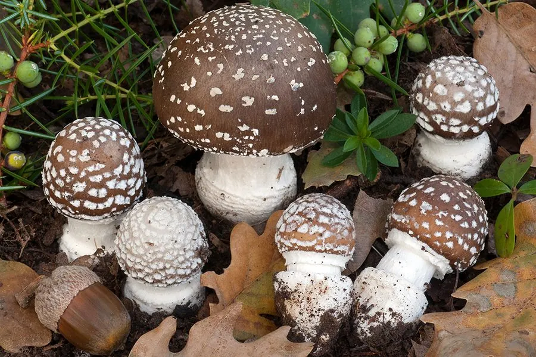

真菌 · 真菌界
豹斑鹅膏 Amanita pantherina

菌盖褐色并布满白色疣点、形似豹纹的剧毒鹅膏，含有鹅膏毒肽，误食可致中毒甚至死亡，严禁采食。
- 分类
- 门担子菌门纲伞菌纲目伞菌目科鹅膏科属鹅膏属
- 栖息环境
- 针叶林和阔叶林的地面，与松树、栎树形成外生菌根
- 地理分布
- 欧洲、北美和东亚，中国林区有分布记录
- 保护级别
- 暂无评估（IUCN 未评估，有毒物种）
物种志
豹斑鹅膏是担子菌门伞菌目的剧毒真菌，子实体单生或群生。菌盖呈半球形至平展，直径 5–12 cm，表面褐色至黄褐色，密布白色至淡黄色的疣状鳞片，像豹子的斑纹，因此得名；菌褶白色，离生；菌柄白色，基部膨大并有白色菌托，菌环白色膜质；孢子印白色。
豹斑鹅膏与松树、栎树等树木形成外生菌根，多生于针叶林和阔叶林的地面，夏秋季出菇，在欧洲、北美和东亚都有分布，中国林区有记录。它含有鹅膏毒肽和异鹅膏氨酸等毒素，误食后会出现幻觉、抽搐、昏迷等神经系统症状，严重时可致死，是著名的剧毒蘑菇。它与一些可食的鹅膏外形相似，绝不能采食；毒菌中毒应立即就医。
形态与习性
- 菌盖直径 5–12 cm，褐色，密布白色疣状鳞片
- 菌褶白色，离生
- 菌柄白色，基部膨大并有白色菌托
- 菌环白色膜质，位于菌柄上部
- 毒性含鹅膏毒肽和异鹅膏氨酸，可致幻觉、抽搐甚至死亡
- 辨识与可食鹅膏相似，严禁采食
趣味知识
- 豹斑鹅膏的菌盖布满白色疣点，像豹子的斑纹，因此得名。
- 它含有鹅膏毒肽，误食后会出现幻觉、抽搐等神经症状。
- 鹅膏属中有多种剧毒种类，不认识的野生菌坚决不采不食。